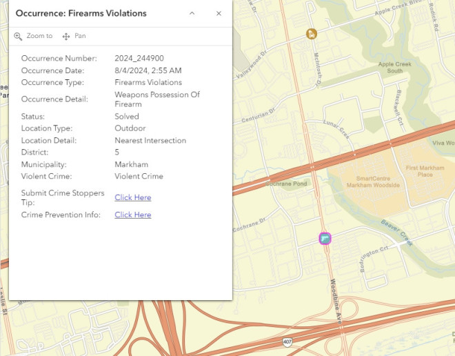
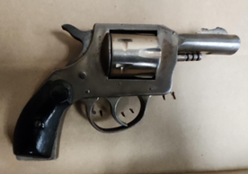

约克区警察在万锦市进行的一次交通拦截中，查获了一把上膛的枪支，并对一男一女提出了指控。
8月4日星期日凌晨约2:50，警员在Lanark Road和Woodbine Avenue附近进行巡逻时，拦截了一辆车。该地点位于华人商家密集区域，附近有万锦广场和一间Costco超市。

图源：YRP
车上有两人，警员发现司机手边有大麻。在根据《大麻控制法》进行搜查时，警方在车辆内发现了一把上膛的枪支。

图源：YRP
两名嫌疑人已被指控，分别是30岁的Panel Mullins和31岁的Julia Llewellyn。两人都是渥太华居民。
任何知情者请致电约克区警局第五分局刑事调查组，电话：1-866-876-5423，分机：7541，或匿名联系灭罪热线：1-800-222-TIPS，或在线提交匿名线索：www.1800222tips.com。
公众可以访问警局的社区安全数据网站，了解完整统计数据和犯罪数据。